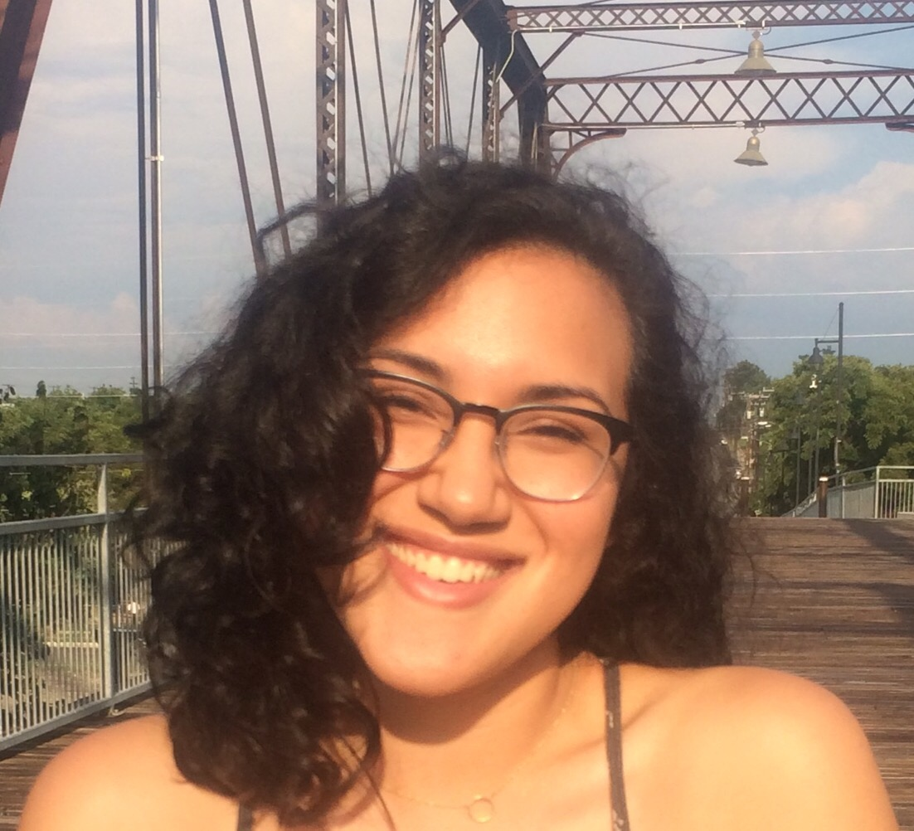
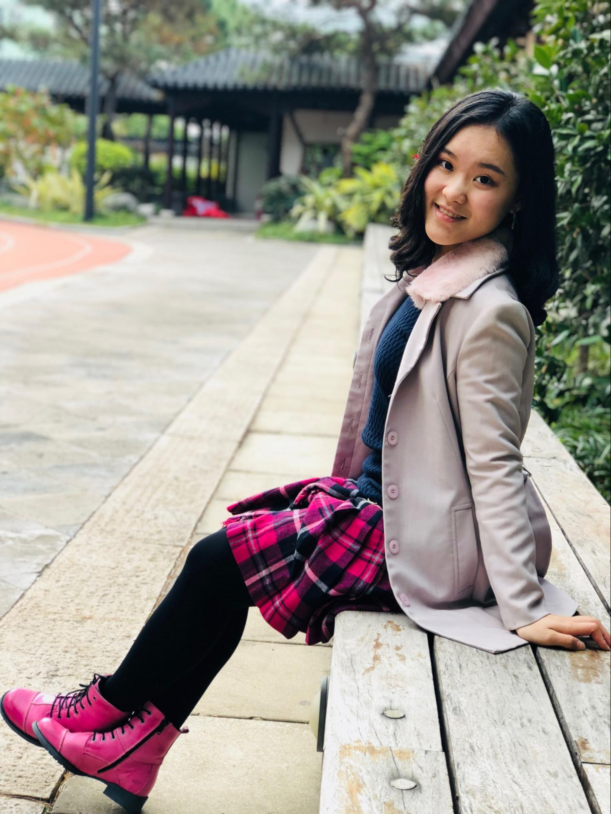
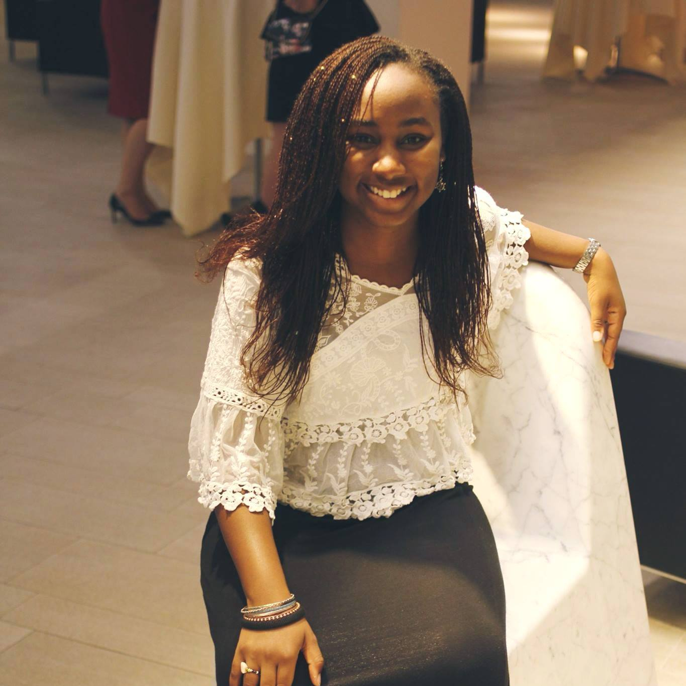
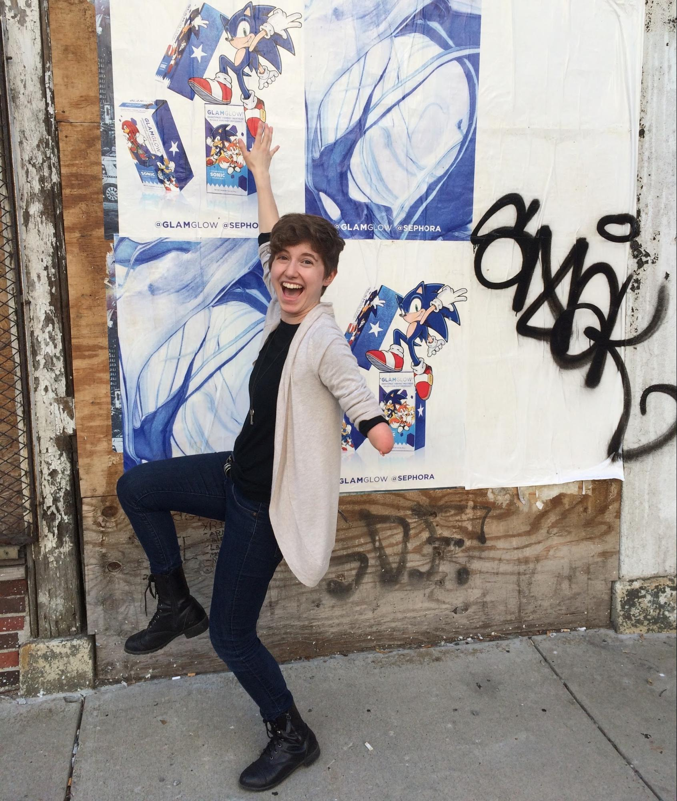

2018 Blumberg-Ginsburg Coordinators
The Artemis Coordinators are undergraduate women at Brown University who are passionate about computer science. You can contact them at artemis@cs.brown.edu.
Gaby Trevino
 |
|
Year: 2021
Hometown: San Antonio, Texas
Hobbies and interests: Bullet journaling, sunshine, watching movies, discovering new music,
dog videos, making art and singing in the shower
Favorite animated movie: Fantastic Mr. Fox and Lilo and Stitch
Favorite Food: Vanilla Lattes
Favorite compliment to recieve: "Gaby, you're glowing!"
|
Sunny (Yunxin) Deng
 |
|
Year: 2021
Hometown: Guangdong, China
Hobbies and interests: Jazz, ballet, piano, travelling, finding new types of food, and talking with anyone
Favorite animated movie: Ice Age
Favorite Food: Cappuccino
Favorite compliment to recieve: “You’re sunny even on a rainy day”
|
Tomi Madarikan
 |
|
Year: 2021
Hometown: Lagos, Nigeria
Hobbies and interests: Singing, dancing, eating, meeting up with friends
Favorite animated movie: The Lion King, Mulan
Favorite Food: Japanese Ramen
Favorite compliment to recieve: “I really admire you...you’re also really pretty”
|
Audrey Kintisch
 |
|
Year: 2020
Hometown: Keene, NH
Hobbies and interests: Running outside, listening to comedy podcasts, drawing plants, listening to music
Favorite animated movie: Nausicaa of the Valley of the Wind
Favorite Food: Earl Grey Tea
Favorite compliment to recieve: Being told that I’m a good friend
|